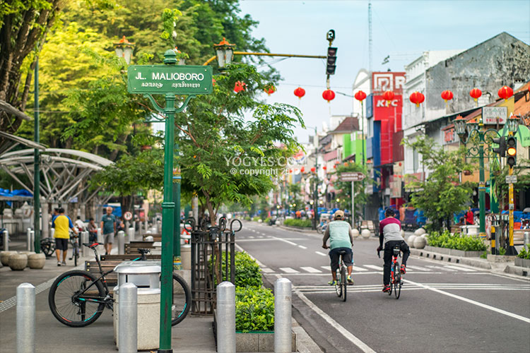

-

Dibangun pada abad ke-9, Candi Borobudur sekarang menjadi magnet yang mampu menarik jutaan wisatawan setiap tahun. Bagaimana cara agar bisa naik ke atas candi?
-
Candi Prambanan dibangun pada abad ke-9. Menjulang setinggi 47 meter dengan ornamen yang mengagumkan, kecantikan candi Hindu ini tak tertandingi. Candi Prambanan terletak 17 km ke arah timur dari pusat Kota Jogja dan bisa dijangkau dengan bus Trans Jogja.
-

Malioboro adalah jantung Kota Jogja. Tak heran bila banyak penginapan murah dekat Malioboro, meskipun sekarang banyak hotel berbintang. Apa saja tempat wisata dan hotel dekat Malioboro? Temukan info lengkapnya di sini
-
Gamelan merupakan alat kesenian tradisional Indonesia. Membunyikan alat musik tersebut dengan cara dipukul-pukul. Barang yang sering dipukul disebut pukulan, barang yang sering diketok disebut ketokan atau kentongan, barang yang sering digembel disebut gembelan, kata gembelan ini bergeser atau berkembang menjadi gamelan. Dengan kata lain gamelan adalah suatu benda hasil dari benda itu digembel-gembel atau dipukul-pukul. Gamelan termasuk musik perkusif. Perkembangan penggunaan gamelan untuk upacara ritual, bersifat keagamaan, pendidikan, media penerangan, dan lain-lain.